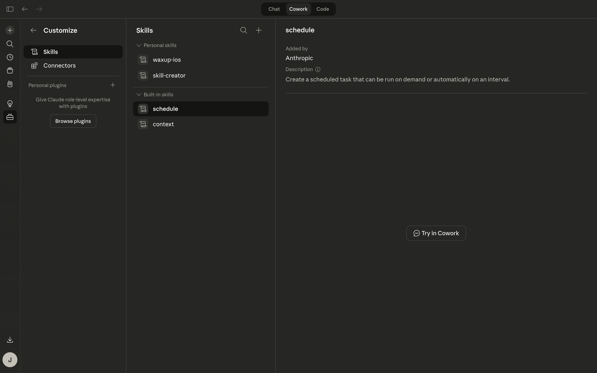
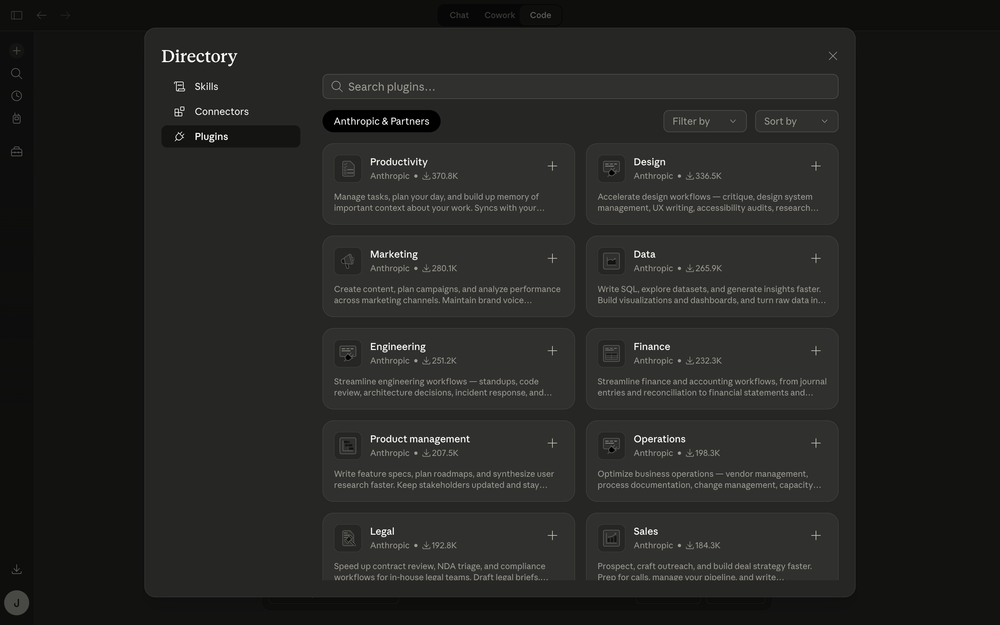

Setup 1
Customize and view skills
This page is good for showing what skills look like without making them feel mandatory.
These are real screenshots from the Claude Mac app, not AI-generated mockups. They are useful for explaining optional setup screens without implying that a beginner must use them on day one.

This page is good for showing what skills look like without making them feel mandatory.

This page is helpful when explaining that plugins are optional extras, not something a beginner needs before asking basic questions.